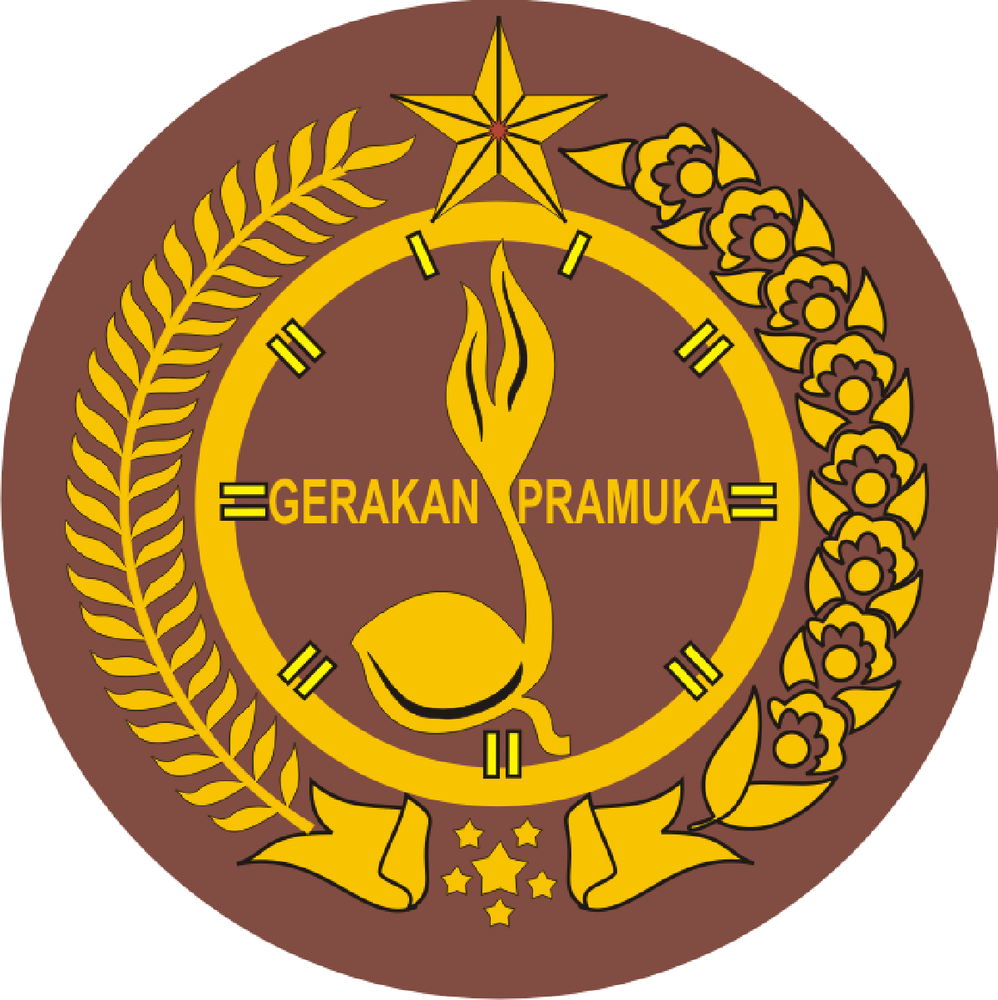
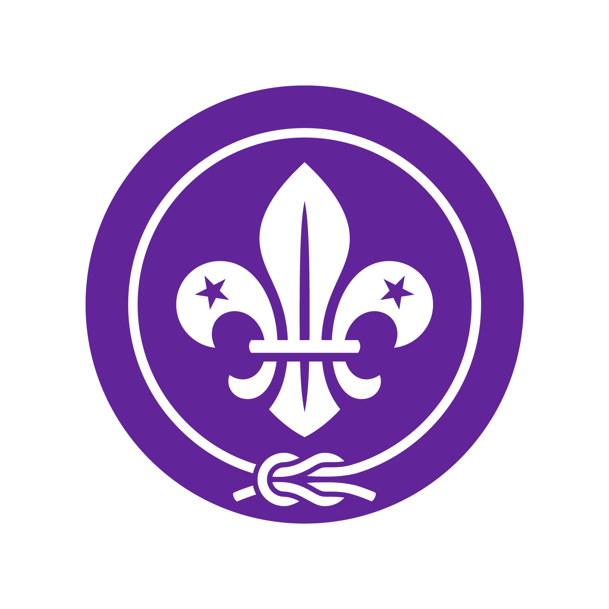

 
APA ITU PRAMUKA?
Pramuka Indonesia adalah organisasi pendidikan nonformal yang menyelenggarakan pendidikan kepanduan di Indonesia. Pramuka merupakan singkatan dari Praja Muda Karana, yang berarti "orang muda yang suka berkarya". Berikut adalah beberapa hal yang perlu diketahui tentang Pramuka Indonesia:
Nama Pramuka berasal dari kata poromuko dalam bahasa Jawa latin yang berarti pasukan terdepan dalam perang.
Gerakan Pramuka Indonesia memiliki beberapa tingkatan, yaitu Pramuka Siaga, Pramuka Penggalang, Pramuka Penegak, dan Pramuka Pandega.
Gerakan Pramuka Indonesia memiliki tujuan untuk membentuk anggota yang beriman, bertakwa, berakhlak mulia, dan memiliki jiwa patriotik.
Gerakan Pramuka Indonesia memiliki sejarah panjang, mulai dari munculnya
Nederlandsche Padvinders Organisatie
(NPO) pada 1912 hingga diresmikannya pada 14 Agustus 1961.
Saat ini, Pramuka Indonesia memiliki sekitar 21 juta anggota dari berbagai usia dan latar belakang.
Back Page
|
Next Page
SOCIAL MEDIA
Whatsapp
wa.me
Instagram
my.ig
© 2024 Project Coding CH Alga Praditya Indonesia